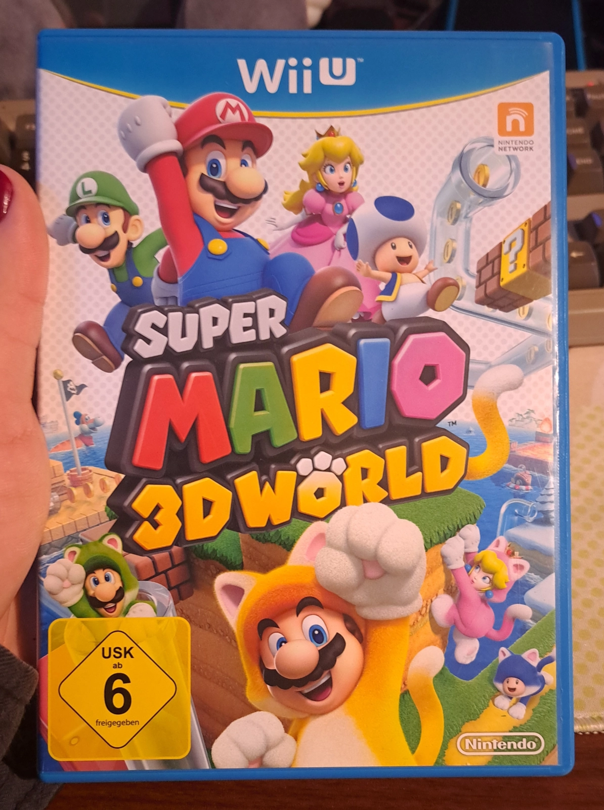
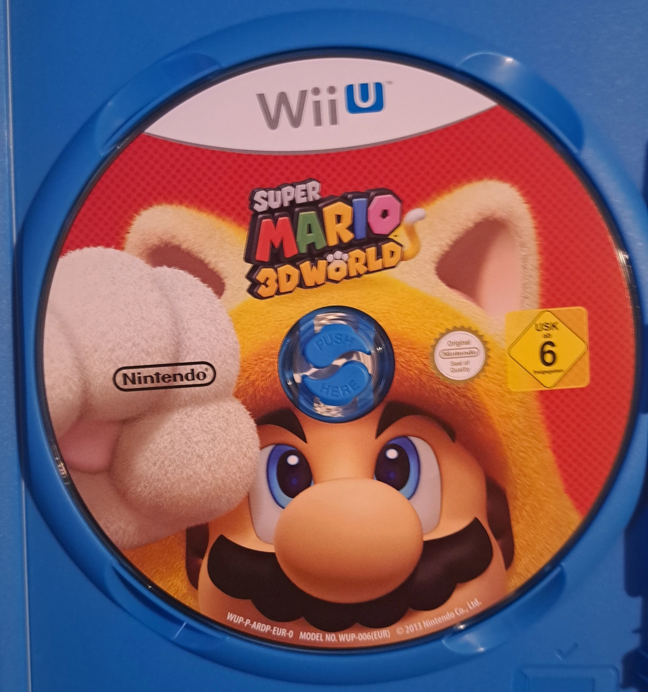

Super Mario
3D World
Developed and published by: Nintendo
Platforms:
- Wii U
- Nintendo Switch (Bowser's Fury)
Released in:
- 2013
- 2021 (Bowser's Fury)
Also owned on: Nintendo Switch
Completed? Yes !


Box Art of the original Wii U release

Game disc
Super Mario
3D World
Developed and published by: Nintendo
Platforms:
Released in:
Also owned on: Nintendo Switch
Completed? Yes !
Super Mario 3D World !
Also known as the game which combines Miles' two most favorite things in the world. Italian plumbers and felines !
Super Mario 3D World was first relased in 2013 on the Wii U and features Mario, Luigi, Peach and Toad traveling to the Sprixie Kingdom through a glass pipe, on a quest to rescue the Sprixies, which were kidnapped by Bowser.
This game acts as a de facto continuation of Super Mario 3D Land, which released two years prior in 2011 on the 3DS, a game which i also adore a LOT ! But unlike Super Mario 3D Land, where you could only play as Mario and Luigi, here you can also play as Peach, Toad and even Rosalina after unlocking her ! All characters inherit their abilities from Super Mario Bros 2.
Where as Mario you have an allrounder experience, with Luigi you can jump very high, with Toad you can run very fast and with Peach you can float in the air for a short while ! As Rosalina you also have the ability to use the spin attack from the Mario Galaxy games !
On your adventure you will come across several new items. The biggest addition being the Super Bell, which when picked up transforms Mario and his friends into cats, which gives them the ability to climb walls, scratch enemies and even do a pounce attack when in mid-air ! The idea of Mario turning into a cat blew my mind as a kid ! It was literally my two favorite things ever combined in one thing !
Another new addition to the item roster is the Double Cherry, which when picked up creates a clone of the character, which allows the player to attack enemies more easily when combined with other items, like the Fire Flower ! Sadly, the Double Cherries aren't used that much throughout the game, but they're really fun to play around with when they are !
Just like in Super Mario 3D Land, where you could find 3 Star Coins in each stage, here you collect Green Stars in every stage, which allow you to unlock new stages later on and are needed to progress in the game !
However, there is also a new kind of collectable scattered throughout the stages: The Miiverse Stamps !
Collecting these would unlock a stamp which the player could use in their Miiverse posts ! Nowerdays they've sadly became useless, as the Miiverse shutdown a while ago already, but they still serve as a neat collectable !
Super Mario 3D World was ported to the Nintendo Switch back in 2021, featuring an all new campain: Bowser's Fury ! The campain features an open world which the player can explore together with Bowser Jr. on a Journey to collect all Cat Shines to fight against Bowser, who has gone completely rouge ! I remember having a lot of fun with it, although i also remember it struggling quite a bit in Handheld Mode ^^'
This game is an absolute must-have for both Wii U and Nintendo Switch owners ! Although oddly enough i actually prefer the Wii U version over the Switch version, even though they're practically both the same game ! I think it just has a lot to do with sentimental value, as i played this game a lot as a kid on my aunt's Wii U ! Also, playing with the Wii U's Gamepad is just way more fun, for some reason !
I am officially outing myself as a Gamepad fan. The Wii U Gamepad rules and there's nothing you can do to change my mind !